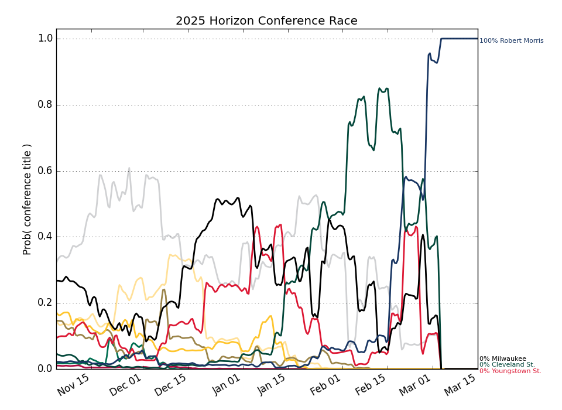

Horizon
Updated with games through Monday, November 17
Conference Projections
Based on 10,000 simulations of the remaining season.
Tiebreaking was done using the
Big Ten tiebreaking procedures.
| Horizon |
Current Record |
Projected Record |
Projected Finish (% odds, with tiebreakers) |
|
Team |
Conf. |
Overall |
Conf. |
Overall |
1st | 2nd | 3rd | 4th | 5th | 6th | 7th | 8th | 9th | 10th | 11th |
| 1. |
Youngstown St. (142) |
0 - 0 |
1 - 2 |
13.4 - 6.6 |
18.0 - 10.0 |
29.8 | 20.8 | 14.8 | 11.5 | 7.6 | 5.7 | 3.8 | 2.8 | 1.7 | 1.0 | 0.5 |
| 2. |
Oakland (158) |
0 - 0 |
0 - 4 |
12.7 - 7.3 |
15.2 - 14.8 |
21.5 | 19.1 | 15.6 | 12.1 | 9.8 | 7.3 | 5.6 | 4.0 | 2.6 | 1.6 | 0.7 |
| 3. |
Wright St. (162) |
0 - 0 |
1 - 3 |
12.7 - 7.3 |
16.2 - 12.8 |
20.9 | 18.4 | 16.1 | 12.5 | 9.6 | 7.6 | 5.6 | 3.9 | 3.0 | 1.7 | 0.8 |
| 4. |
Fort Wayne (212) |
0 - 0 |
0 - 3 |
11.1 - 8.9 |
12.9 - 15.1 |
9.4 | 11.7 | 12.5 | 12.8 | 12.4 | 10.9 | 9.5 | 7.7 | 5.8 | 4.6 | 2.6 |
| 5. |
Milwaukee (247) |
0 - 0 |
2 - 3 |
10.2 - 9.8 |
13.3 - 16.7 |
5.7 | 8.6 | 10.3 | 11.3 | 11.8 | 12.2 | 11.2 | 9.6 | 8.0 | 7.0 | 4.4 |
| 6. |
Robert Morris (269) |
0 - 0 |
1 - 1 |
9.6 - 10.4 |
13.5 - 14.5 |
4.0 | 6.3 | 8.0 | 9.9 | 10.6 | 12.3 | 11.3 | 11.1 | 10.5 | 8.9 | 7.0 |
| 7. |
Green Bay (272) |
0 - 0 |
0 - 4 |
9.5 - 10.5 |
10.3 - 16.7 |
4.1 | 5.9 | 8.2 | 9.6 | 10.5 | 11.0 | 11.6 | 11.7 | 10.7 | 9.4 | 7.0 |
| 8. |
Northern Kentucky (290) |
0 - 0 |
0 - 2 |
8.7 - 11.3 |
11.7 - 16.3 |
2.3 | 3.7 | 5.5 | 7.4 | 9.2 | 10.2 | 12.3 | 12.8 | 12.4 | 12.6 | 11.5 |
| 9. |
Cleveland St. (317) |
0 - 0 |
1 - 3 |
7.7 - 12.3 |
9.6 - 18.4 |
1.0 | 2.4 | 3.6 | 5.2 | 6.7 | 8.4 | 10.3 | 13.1 | 14.9 | 16.6 | 17.9 |
| 10. |
Detroit (324) |
0 - 0 |
0 - 3 |
7.5 - 12.5 |
8.5 - 18.5 |
0.8 | 1.9 | 3.1 | 4.7 | 6.9 | 7.9 | 10.2 | 12.3 | 15.6 | 17.0 | 19.8 |
| 11. |
IUPUI (331) |
0 - 0 |
1 - 3 |
6.8 - 13.2 |
9.4 - 19.6 |
0.6 | 1.3 | 2.3 | 3.1 | 4.8 | 6.3 | 8.6 | 11.0 | 14.7 | 19.6 | 27.8 |
This table gives the probability of earning at least a share of a given place.
So there are no tiebreakers and there can be multiple first place teams, for example.
|
Projected Finish (% odds, no tiebreakers) |
|
Team |
Outright |
1st | 2nd | 3rd | 4th | 5th | 6th | 7th | 8th | 9th | 10th | 11th |
| 1. |
Youngstown St. |
25.2 | 35.1 | 21.1 | 14.8 | 9.6 | 7.0 | 4.7 | 2.9 | 2.3 | 1.4 | 0.8 | 0.3 |
| 2. |
Oakland |
17.2 | 26.2 | 20.1 | 15.7 | 11.3 | 8.5 | 6.5 | 4.8 | 3.2 | 2.1 | 1.2 | 0.4 |
| 3. |
Wright St. |
17.2 | 25.8 | 19.5 | 16.0 | 11.2 | 9.0 | 6.5 | 4.7 | 3.3 | 2.2 | 1.2 | 0.6 |
| 4. |
Fort Wayne |
7.3 | 12.0 | 13.4 | 13.6 | 13.3 | 11.8 | 9.8 | 9.0 | 6.5 | 5.1 | 3.5 | 2.0 |
| 5. |
Milwaukee |
4.1 | 7.5 | 10.1 | 11.6 | 12.0 | 11.8 | 11.9 | 10.5 | 8.7 | 7.0 | 5.7 | 3.2 |
| 6. |
Robert Morris |
2.8 | 5.3 | 7.5 | 9.3 | 11.1 | 11.4 | 11.9 | 11.3 | 10.2 | 9.1 | 7.5 | 5.3 |
| 7. |
Green Bay |
3.0 | 5.4 | 7.2 | 9.5 | 10.6 | 11.2 | 11.1 | 11.5 | 10.8 | 9.8 | 7.8 | 5.2 |
| 8. |
Northern Kentucky |
1.5 | 3.2 | 4.5 | 6.7 | 8.7 | 9.4 | 11.4 | 12.3 | 12.1 | 11.9 | 10.8 | 8.9 |
| 9. |
Cleveland St. |
0.7 | 1.5 | 3.1 | 4.5 | 6.0 | 7.4 | 9.1 | 11.1 | 12.8 | 14.9 | 14.9 | 14.6 |
| 10. |
Detroit |
0.5 | 1.1 | 2.5 | 3.6 | 5.9 | 7.8 | 8.9 | 10.7 | 12.8 | 15.0 | 15.4 | 16.3 |
| 11. |
IUPUI |
0.4 | 0.9 | 1.7 | 2.6 | 4.0 | 5.5 | 7.1 | 9.3 | 11.9 | 14.9 | 18.9 | 23.3 |
